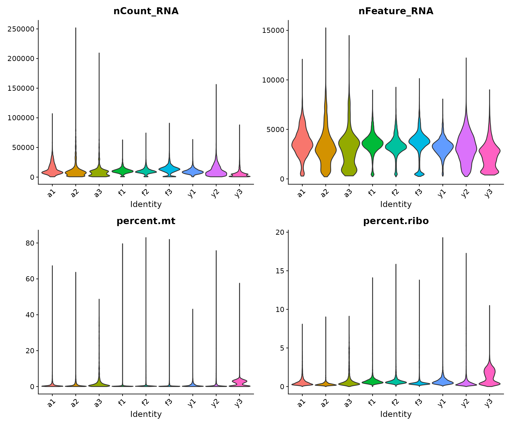
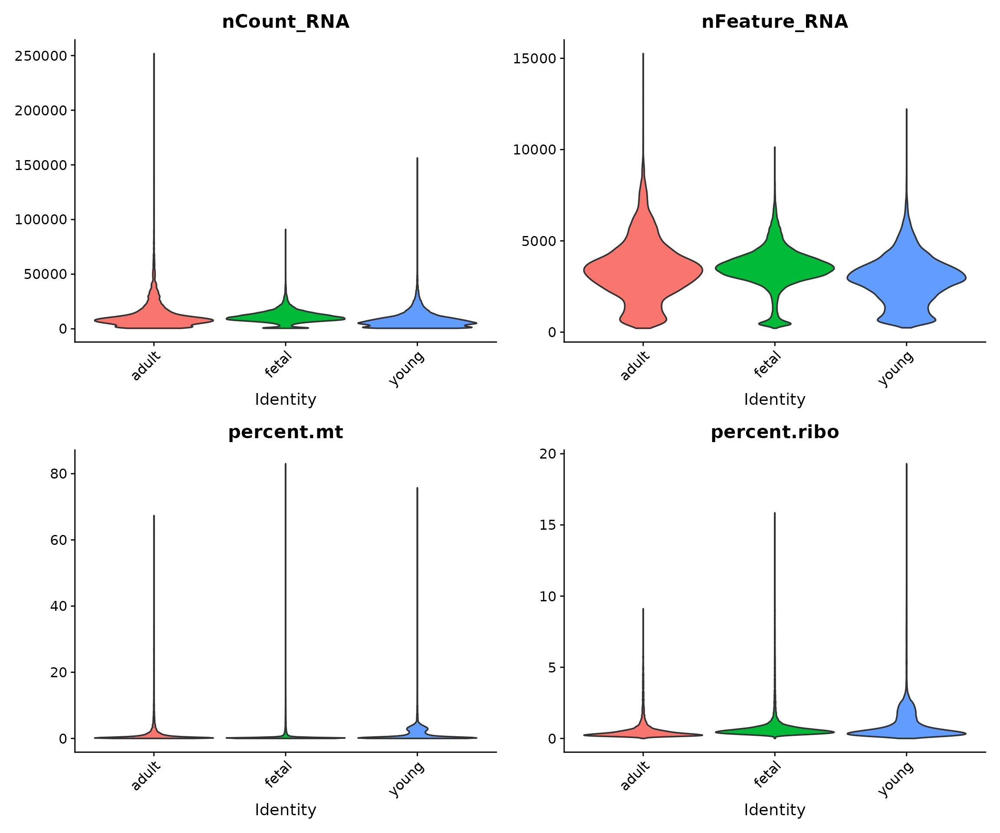
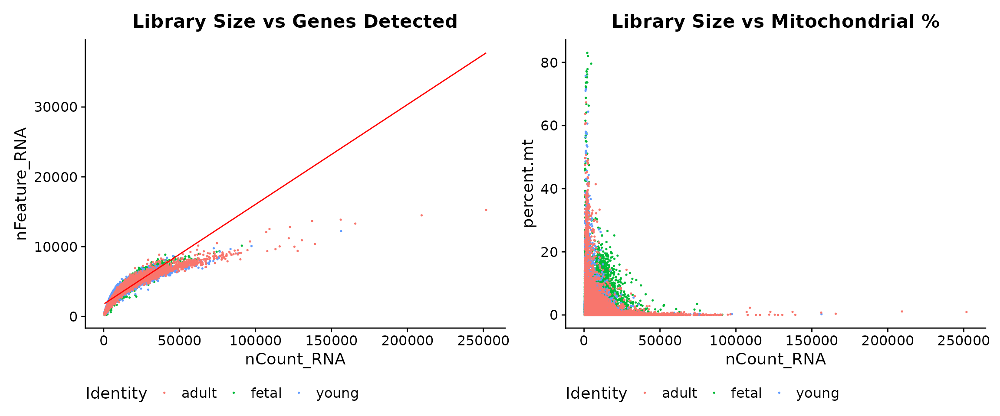
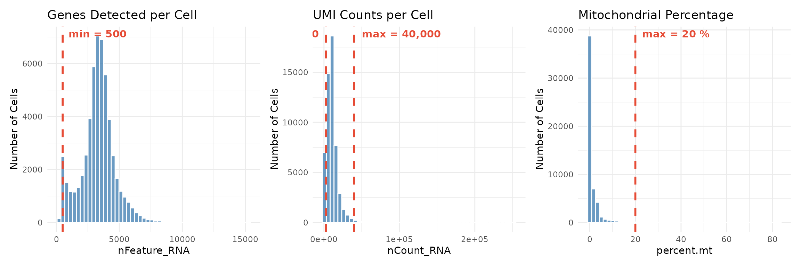
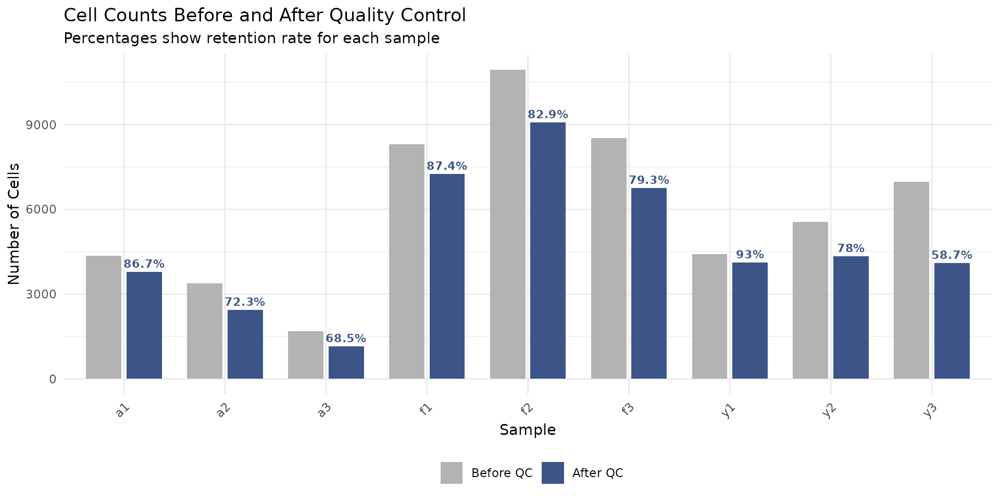
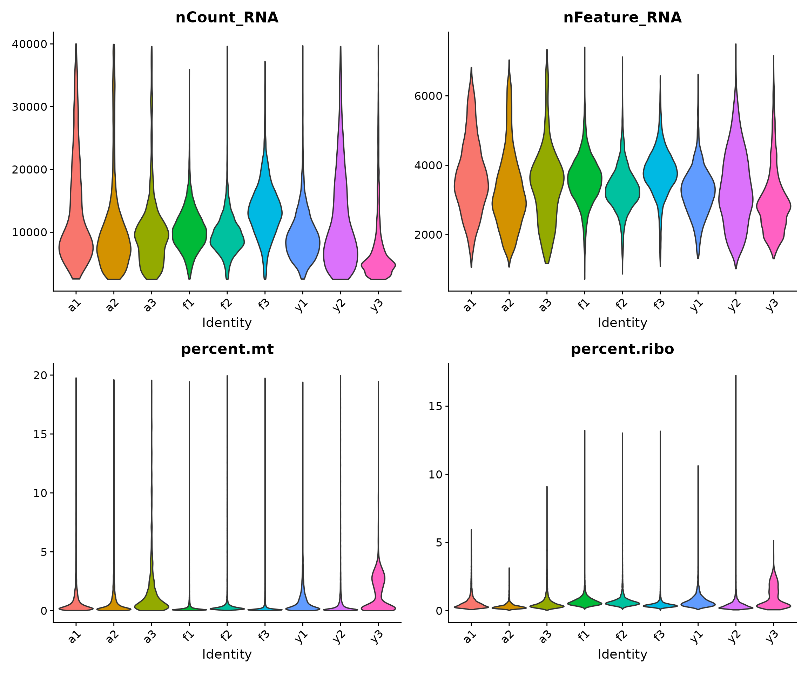
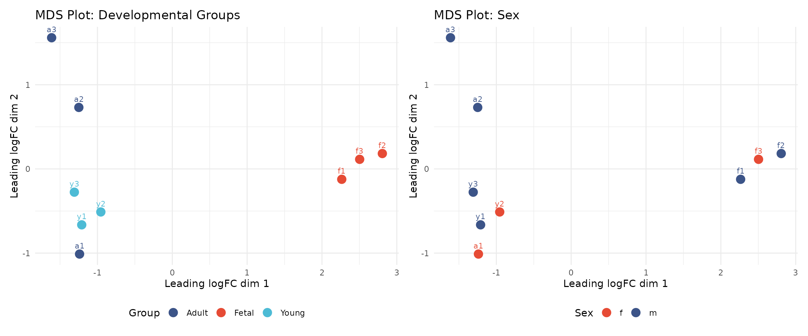

Module 1: Quality Control
Single Cell Workshop
2026-05-04
Source:vignettes/01_quality_control.Rmd
01_quality_control.RmdIntroduction
Quality control (QC) is a critical first step in any single cell RNA-sequencing (scRNA-seq) analysis. The goal of QC is to identify and remove low-quality cells that could confound downstream analysis. Poor quality cells can arise from several sources: empty droplets that contain only ambient RNA, or dying cells that have compromised membranes.
In this module, we work with single nuclei RNA-sequencing (snRNA-seq) data from human heart tissue. The data comes from a study examining human heart development across three stages: foetal, young, and adult (Sim et al., 2021, Circulation). Understanding how the heart changes at the cellular level across development provides insights into cardiac maturation and potential therapeutic targets.
What is Single Cell RNA-Sequencing?
Traditional “bulk” RNA-sequencing measures the average gene expression across millions of cells. While powerful, this approach masks the heterogeneity that exists within tissues. Single cell RNA-sequencing overcomes this limitation by measuring gene expression in individual cells, allowing us to:
- Identify distinct cell types within a tissue
- Discover rare cell populations
- Study cell-to-cell variability
- Track cellular states during development or disease
The most widely used platform for scRNA-seq is the 10X Genomics Chromium system, which captures cells in oil droplets along with barcoded beads. Each bead carries oligonucleotides with three key components:
- Cell barcode: Identifies which cell the RNA came from
- Unique Molecular Identifier (UMI): Identifies individual RNA molecules, removing PCR amplification bias
- Poly-dT tail: Captures polyadenylated mRNA
Learning Objectives
By the end of this module, you will be able to:
- Load and explore scRNA-seq count data in R
- Understand the structure of a Seurat object
- Calculate and interpret per-cell quality control metrics
- Apply filtering thresholds to remove low-quality cells
- Visualise sample-level relationships using pseudobulk aggregation
Setup: Loading Required Libraries
The first step is to load the R packages we will use throughout this module. Each package provides specific functionality:
- Seurat: The primary framework for single cell analysis, providing functions for data manipulation, normalisation, clustering, and visualisation
- ggplot2: Creating publication-quality plots using the grammar of graphics
- patchwork: Combining multiple plots into composite figures
- dplyr: Data manipulation using intuitive verbs (filter, select, mutate, etc.)
- edgeR: Tools for RNA-seq analysis, used here for pseudobulk visualisation
- org.Hs.eg.db: Database of human gene annotations
Colour Palette
We define a consistent colour scheme for all visualisations. The developmental groups follow a biological progression from warm (foetal) to cool (adult) tones:
# Developmental group colours
group_colors <- c(
"Fetal" = "#E64B35",
"Young" = "#4DBBD5",
"Adult" = "#3C5488"
)
# Sample colours - shades within each group
sample_colors <- c(
"f1" = "#E64B35", "f2" = "#F39B7F", "f3" = "#FFCAB0",
"y1" = "#4DBBD5", "y2" = "#91D1C2", "y3" = "#C5E8E0",
"a1" = "#3C5488", "a2" = "#8491B4", "a3" = "#B4BCD4"
)Loading the Data
Understanding the Data Files
Our workshop data consists of two files:
heart-counts.Rds: A sparse matrix containing UMI counts for each gene in each cell. The rows represent genes (~34,000) and the columns represent cells (~54,000). The matrix is stored in a “sparse” format because most entries are zero (a gene is typically detected in only a subset of cells), and sparse matrices use much less memory than regular matrices.
cellinfo_updated.Rds: A data frame containing metadata for each cell, including which sample it came from, the developmental group (foetal, young, or adult), and the sex of the donor.
Let us load these files and examine their structure:
# Set the path to the data directory
# We use a relative path from the tutorials folder
data_dir <- "../data"
# Load the count matrix
# readRDS() reads an R object that was saved with saveRDS()
counts <- readRDS(file.path(data_dir, "heart-counts.Rds"))
# Load the cell metadata
cellinfo <- readRDS(file.path(data_dir, "cellinfo_updated.Rds"))Exploring the Count Matrix
The count matrix is the core data structure in scRNA-seq analysis. Each entry represents the number of UMI counts for a particular gene in a particular cell. Let us examine its dimensions and structure:
# Check dimensions and structure of the count matrix
cat("Count matrix:\n")## Count matrix:## - Class: dgCMatrix## - Genes: 33,939## - Cells: 54,140The cell barcodes follow the format BARCODE_SAMPLE,
where the suffix (e.g., _f1) indicates which sample the
cell came from. This naming convention helps us track cells back to
their sample of origin.
Exploring the Cell Metadata
The cell metadata contains information about each cell that we will use throughout our analysis:
# Check the structure of the metadata
dim(cellinfo)## [1] 54140 7
head(cellinfo)## CellID Sample Sex Celltype Group Orig_Celltype
## 1 AAACCCAAGGACAACC_f1 f1 m Fibroblast fetal Fibroblast1
## 2 AAACCCAAGGTCCGAA_f1 f1 m Epicardial cells fetal Pericyte
## 3 AAACCCAAGTTTCGAC_f1 f1 m Endothelial cells fetal Endothelial cells
## 4 AAACCCACAAATGAGT_f1 f1 m Epicardial cells fetal Pericyte
## 5 AAACCCATCATTGCGA_f1 f1 m Cardiomyocytes fetal Cardiomyocytes1
## 6 AAACCCATCGTTCCTG_f1 f1 m Immune cells fetal Mast cells
## RefinedCellType
## 1 fibro-0
## 2 epic-1
## 3 endo-4
## 4 epic-1
## 5 cardio-0
## 6 immune-5The metadata contains several columns:
- CellID: Unique identifier for each cell (matches column names in the count matrix)
- Sample: Sample identifier (f1-f3 for foetal, y1-y3 for young, a1-a3 for adult)
- Sex: Donor sex (m = male, f = female)
- Group: Developmental stage (foetal, young, or adult)
Let us examine the sample composition of our dataset:
# Cells per sample and group
table(cellinfo$Sample, cellinfo$Group)##
## adult fetal young
## a1 4360 0 0
## a2 3375 0 0
## a3 1681 0 0
## f1 0 8296 0
## f2 0 10948 0
## f3 0 8516 0
## y1 0 0 4422
## y2 0 0 5558
## y3 0 0 6984We have 9 samples: 3 foetal (f1, f2, f3), 3 young (y1, y2, y3), and 3 adult (a1, a2, a3). Having biological replicates (multiple samples per group) is essential for statistical analysis, as it allows us to distinguish biological variation from technical noise.
Creating a Seurat Object
Seurat is the most widely used R package for single cell analysis. The Seurat object is a container that holds the count matrix, cell metadata, and all results from downstream analyses (normalisation, clustering, etc.) in a single object. This makes it easy to keep track of all data and results.
Here, we create a Seurat object from our count matrix:
# Create the Seurat object
# min.cells = 3: Keep genes detected in at least 3 cells (removes very rare genes)
# min.features = 200: Keep cells with at least 200 genes detected (removes likely empty droplets)
seu <- CreateSeuratObject(
counts = counts,
project = "heart_workshop",
min.cells = 3,
min.features = 200
)
# Report what was filtered
cat("Initial filtering:\n")## Initial filtering:## - Genes: 33939 -> 29323## - Cells: 54140 -> 54135The min.cells and min.features parameters
perform initial filtering:
-
min.cells = 3: Removes genes detected in fewer than 3 cells. These very rare genes add noise without contributing meaningful biological information. -
min.features = 200: Removes cells with fewer than 200 genes detected. Cells with very few genes are likely empty droplets containing only ambient RNA.
Adding Sample Metadata
Next, we add the sample metadata to our Seurat object. This information will be used for grouping cells in visualisations and statistical analyses.
# The cell order in the Seurat object may differ from the metadata
# We need to match them by cell ID
cellinfo_matched <- cellinfo[match(colnames(seu), cellinfo$CellID), ]
# Verify the matching worked correctly
stopifnot(all(colnames(seu) == cellinfo_matched$CellID))
# Add metadata columns to the Seurat object
seu$sample <- cellinfo_matched$Sample
seu$group <- cellinfo_matched$Group
seu$sex <- cellinfo_matched$Sex
# Clean up large objects to free memory
rm(counts, cellinfo, cellinfo_matched)
gc() # Garbage collection to release memory## used (Mb) gc trigger (Mb) max used (Mb)
## Ncells 7682881 410.4 13937455 744.4 12640770 675.1
## Vcells 281892878 2150.7 1210321682 9234.1 1180023552 9002.9Examining the Seurat Object
Let us examine the structure of our Seurat object:
# Print a summary of the object
seu## An object of class Seurat
## 29323 features across 54135 samples within 1 assay
## Active assay: RNA (29323 features, 0 variable features)
## 1 layer present: counts
# View the first few rows of metadata
head(seu@meta.data)## orig.ident nCount_RNA nFeature_RNA sample group sex
## AAACCCAAGGACAACC_f1 heart_workshop 9503 3588 f1 fetal m
## AAACCCAAGGTCCGAA_f1 heart_workshop 19729 5861 f1 fetal m
## AAACCCAAGTTTCGAC_f1 heart_workshop 7748 2973 f1 fetal m
## AAACCCACAAATGAGT_f1 heart_workshop 8640 3167 f1 fetal m
## AAACCCATCATTGCGA_f1 heart_workshop 11820 4017 f1 fetal m
## AAACCCATCGTTCCTG_f1 heart_workshop 5826 2134 f1 fetal mThe Seurat object automatically creates two metadata columns:
- nCount_RNA: Total UMI counts per cell (also called “library size”)
- nFeature_RNA: Number of genes detected per cell (also called “gene count”)
We added three more columns: sample, group,
and sex.
Gene Annotation
Why Annotate Genes?
Before calculating quality control metrics, we need to identify specific classes of genes. In particular, we are interested in:
Mitochondrial genes: High mitochondrial gene expression often indicates cell stress or death. When a cell’s membrane is compromised, cytoplasmic RNA leaks out while mitochondrial RNA (protected within the mitochondria) is retained, leading to an elevated mitochondrial fraction.
Ribosomal genes: These are highly expressed in most cells but are generally not informative for distinguishing cell types. While not typically used for filtering, tracking ribosomal content can provide insights into cellular activity.
We use the org.Hs.eg.db package, which contains comprehensive annotation information for human genes.
# Get the list of gene names from our Seurat object
gene_symbols <- rownames(seu)
# Query the annotation database
# We request the gene symbol, Entrez ID, full name, and chromosome
ann <- AnnotationDbi::select(
org.Hs.eg.db,
keys = gene_symbols,
columns = c("SYMBOL", "ENTREZID", "GENENAME", "CHR"),
keytype = "SYMBOL"
)
# Some genes may have multiple entries; keep only the first match
ann <- ann[!duplicated(ann$SYMBOL), ]
# Match annotations to the gene order in our Seurat object
ann <- ann[match(gene_symbols, ann$SYMBOL), ]
# Report annotation success rate
cat("Gene annotation:\n")## Gene annotation:## - Total genes: 29323## - Annotated: 20071## - Success rate: 68.4 %Identifying Mitochondrial Genes
Mitochondrial genes in human data can be identified by their gene names, which begin with “MT-”. Let us find these genes:
# Find genes that start with "MT-"
mito_genes <- grep("^MT-", gene_symbols, value = TRUE)
mito_genes## [1] "MT-ND1" "MT-ND2" "MT-CO1" "MT-CO2" "MT-ATP8" "MT-ATP6" "MT-CO3"
## [8] "MT-ND3" "MT-ND4L" "MT-ND4" "MT-ND5" "MT-ND6" "MT-CYB"The human mitochondrial genome encodes 13 protein-coding genes, 22 tRNAs, and 2 rRNAs. The protein-coding genes are primarily involved in oxidative phosphorylation.
Identifying Ribosomal Genes
Ribosomal protein genes follow a naming convention: RPS (ribosomal protein small subunit) and RPL (ribosomal protein large subunit):
# Find genes that start with "RPS" or "RPL"
ribo_genes <- grep("^RP[SL]", gene_symbols, value = TRUE)
length(ribo_genes)## [1] 103
head(ribo_genes, 20)## [1] "RPL22" "RPL11" "RPS6KA1" "RPS8" "RPL5" "RPS27" "RPS6KC1"
## [8] "RPS7" "RPS27A" "RPL31" "RPL37A" "RPL32" "RPL15" "RPSA"
## [15] "RPL14" "RPL29" "RPL24" "RPL22L1" "RPL39L" "RPL35A"Calculating Quality Control Metrics
Per-Cell QC Metrics
Now we calculate the key QC metrics for each cell. Seurat provides
the PercentageFeatureSet() function to calculate the
percentage of counts from a specified set of genes.
# Calculate the percentage of counts from mitochondrial genes
# pattern = "^MT-" matches gene names starting with "MT-"
seu[["percent.mt"]] <- PercentageFeatureSet(seu, pattern = "^MT-")
# Calculate the percentage of counts from ribosomal genes
seu[["percent.ribo"]] <- PercentageFeatureSet(seu, pattern = "^RP[SL]")
# View summary statistics for all QC metrics
summary(seu@meta.data[, c("nCount_RNA", "nFeature_RNA", "percent.mt", "percent.ribo")])## nCount_RNA nFeature_RNA percent.mt percent.ribo
## Min. : 500 Min. : 212 Min. : 0.0000 Min. : 0.0000
## 1st Qu.: 5932 1st Qu.: 2650 1st Qu.: 0.1032 1st Qu.: 0.3511
## Median : 9365 Median : 3358 Median : 0.2522 Median : 0.5275
## Mean : 10686 Mean : 3293 Mean : 1.5203 Mean : 0.8745
## 3rd Qu.: 13370 3rd Qu.: 3997 3rd Qu.: 1.1316 3rd Qu.: 0.8531
## Max. :251820 Max. :15259 Max. :83.0145 Max. :19.3012Let us understand what these metrics tell us:
- nCount_RNA (library size): The total number of UMI counts in a cell. Very low values suggest empty droplets; very high values may indicate technical artefacts.
- nFeature_RNA (gene count): The number of genes detected. Correlates with library size but provides additional information about transcriptome complexity.
- percent.mt: Percentage of counts from mitochondrial genes. High values (typically >10-20%) suggest dying cells.
- percent.ribo: Percentage of counts from ribosomal genes. Varies by cell type; highly proliferative cells often have higher ribosomal content.
Visualising QC Metrics by Sample
Visualising QC metrics helps us understand the quality of each sample and identify any systematic issues. Violin plots show the distribution of values, with the width indicating the density of cells at each value.
# Create violin plots for each QC metric, grouped by sample
VlnPlot(
seu,
features = c("nCount_RNA", "nFeature_RNA", "percent.mt", "percent.ribo"),
group.by = "sample",
pt.size = 0, # Don't show individual points (too many cells)
ncol = 2
) &
theme(axis.text.x = element_text(angle = 45, hjust = 1))
Interpreting the violin plots:
- The shape of each “violin” shows the distribution of values for that sample
- Wider regions indicate more cells with that value
- We look for samples that deviate substantially from others, which might indicate technical issues
- For snRNA-seq (nuclei), we typically expect lower mitochondrial content than scRNA-seq (whole cells) since mitochondria are in the cytoplasm
Visualising QC Metrics by Developmental Group
Here, we examine whether there are systematic differences between developmental stages:
VlnPlot(
seu,
features = c("nCount_RNA", "nFeature_RNA", "percent.mt", "percent.ribo"),
group.by = "group",
pt.size = 0,
ncol = 2
) &
theme(axis.text.x = element_text(angle = 45, hjust = 1))
Biological differences between developmental stages may manifest as differences in QC metrics. For example, foetal cells might have different metabolic activity than adult cells, potentially affecting mitochondrial content.
Relationships Between QC Metrics
Scatter plots reveal relationships between QC metrics and help identify outlier cells. We expect a positive correlation between library size and gene count: cells with more total counts should detect more genes.
# Scatter plot: Library size vs Gene count
p1 <- FeatureScatter(
seu,
feature1 = "nCount_RNA",
feature2 = "nFeature_RNA",
group.by = "group",
pt.size = 0.1
) +
geom_smooth(method = "lm", se = FALSE, colour = "red", linewidth = 0.5) +
theme(legend.position = "bottom") +
labs(title = "Library Size vs Genes Detected")
# Scatter plot: Library size vs Mitochondrial percentage
p2 <- FeatureScatter(
seu,
feature1 = "nCount_RNA",
feature2 = "percent.mt",
group.by = "group",
pt.size = 0.1
) +
theme(legend.position = "bottom") +
labs(title = "Library Size vs Mitochondrial %")
p1 + p2
Interpreting the scatter plots:
- Left panel: The strong positive correlation between nCount_RNA and nFeature_RNA is expected. Cells deviating from this trend (high counts but few genes) may have quality issues.
- Right panel: We look for cells with both low library size and high mitochondrial content (upper-left region), which are strong candidates for removal.
Applying Quality Control Filters
Defining Filtering Thresholds
Based on our QC visualisations and established guidelines for snRNA-seq data, we define the following filtering thresholds:
# Define filtering thresholds
min_genes <- 500 # Minimum genes detected per cell
min_counts <- 2500 # Minimum UMI counts per cell
max_counts <- 40000 # Maximum UMI counts per cell
max_mt <- 20 # Maximum mitochondrial percentageRationale for each threshold:
- min_genes = 500: Cells with fewer genes are likely empty droplets or debris. The 500-gene threshold is commonly used for snRNA-seq.
- min_counts = 2500: Ensures sufficient sequencing depth for reliable downstream analysis.
- max_counts = 40000: Extremely high counts may indicate technical artefacts.
- max_mt = 20%: High mitochondrial content indicates cell stress or death. The 20% threshold is appropriate for snRNA-seq; for scRNA-seq, 10% might be more suitable.
Visualising Thresholds
Before applying filters, it is helpful to visualise where the thresholds fall relative to the data distribution:
# Create histograms with threshold lines
p1 <- ggplot(seu@meta.data, aes(x = nFeature_RNA)) +
geom_histogram(bins = 50, fill = "steelblue", colour = "white", alpha = 0.8) +
geom_vline(xintercept = min_genes, colour = "#E64B35", linetype = "dashed", linewidth = 1) +
annotate("text", x = min_genes, y = Inf, label = paste("min =", min_genes),
vjust = 1.5, hjust = -0.1, colour = "#E64B35", fontface = "bold") +
labs(title = "Genes Detected per Cell", x = "nFeature_RNA", y = "Number of Cells") +
theme_minimal()
p2 <- ggplot(seu@meta.data, aes(x = nCount_RNA)) +
geom_histogram(bins = 50, fill = "steelblue", colour = "white", alpha = 0.8) +
geom_vline(xintercept = c(min_counts, max_counts), colour = "#E64B35", linetype = "dashed", linewidth = 1) +
annotate("text", x = min_counts, y = Inf, label = paste("min =", format(min_counts, big.mark = ",")),
vjust = 1.5, hjust = 1.1, colour = "#E64B35", fontface = "bold") +
annotate("text", x = max_counts, y = Inf, label = paste("max =", format(max_counts, big.mark = ",")),
vjust = 1.5, hjust = -0.1, colour = "#E64B35", fontface = "bold") +
labs(title = "UMI Counts per Cell", x = "nCount_RNA", y = "Number of Cells") +
theme_minimal()
p3 <- ggplot(seu@meta.data, aes(x = percent.mt)) +
geom_histogram(bins = 50, fill = "steelblue", colour = "white", alpha = 0.8) +
geom_vline(xintercept = max_mt, colour = "#E64B35", linetype = "dashed", linewidth = 1) +
annotate("text", x = max_mt, y = Inf, label = paste("max =", max_mt, "%"),
vjust = 1.5, hjust = -0.1, colour = "#E64B35", fontface = "bold") +
labs(title = "Mitochondrial Percentage", x = "percent.mt", y = "Number of Cells") +
theme_minimal()
p1 + p2 + p3
The red dashed lines show our filtering thresholds. Cells to the left of a “min” threshold or to the right of a “max” threshold will be removed.
Applying Filters
Now we apply all filtering criteria simultaneously:
# Record the number of cells before filtering
cells_before <- ncol(seu)
# Apply all filters using Seurat's subset function
seu_filtered <- subset(
seu,
subset = nFeature_RNA >= min_genes &
nCount_RNA >= min_counts &
nCount_RNA <= max_counts &
percent.mt <= max_mt
)
# Record the number of cells after filtering
cells_after <- ncol(seu_filtered)
# Report filtering results
cat("Filtering results:\n")## Filtering results:
cat("- Cells before:", cells_before, "\n")## - Cells before: 54135
cat("- Cells after:", cells_after, "\n")## - Cells after: 47405
cat("- Cells removed:", cells_before - cells_after, "\n")## - Cells removed: 6730## - Retention: 87.6 %Examining Filtering Effects by Sample
It is important to verify that filtering does not disproportionately affect certain samples, which could indicate sample-specific quality issues:
# Calculate cells per sample before and after filtering
before_counts <- table(seu$sample)
after_counts <- table(seu_filtered$sample)
# Create a summary table
filter_summary <- data.frame(
sample = names(before_counts),
before = as.numeric(before_counts),
after = as.numeric(after_counts[names(before_counts)]),
stringsAsFactors = FALSE
)
filter_summary$removed <- filter_summary$before - filter_summary$after
filter_summary$retention_pct <- round(filter_summary$after / filter_summary$before * 100, 1)
# Add group information
filter_summary$group <- c(
rep("adult", 3), # a1, a2, a3
rep("foetal", 3), # f1, f2, f3
rep("young", 3) # y1, y2, y3
)[match(filter_summary$sample, c("a1", "a2", "a3", "f1", "f2", "f3", "y1", "y2", "y3"))]
filter_summary## sample before after removed retention_pct group
## 1 a1 4360 3998 362 91.7 adult
## 2 a2 3374 2605 769 77.2 adult
## 3 a3 1681 1226 455 72.9 adult
## 4 f1 8294 7952 342 95.9 foetal
## 5 f2 10947 10389 558 94.9 foetal
## 6 f3 8515 7489 1026 88.0 foetal
## 7 y1 4422 4306 116 97.4 young
## 8 y2 5558 4695 863 84.5 young
## 9 y3 6984 4745 2239 67.9 young
# Visualise filtering effect
filter_long <- filter_summary %>%
tidyr::pivot_longer(
cols = c(before, after),
names_to = "stage",
values_to = "cells"
) %>%
mutate(
stage = factor(stage, levels = c("before", "after")),
# Add retention label only for "after" bars (empty string for "before")
label = ifelse(stage == "after", paste0(retention_pct, "%"), "")
)
ggplot(filter_long, aes(x = sample, y = cells, fill = stage)) +
geom_bar(stat = "identity", position = position_dodge(width = 0.8), width = 0.7) +
scale_fill_manual(
values = c("before" = "grey70", "after" = "#3C5488"),
labels = c("Before QC", "After QC")
) +
geom_text(
aes(label = label),
position = position_dodge(width = 0.8),
vjust = -0.5, size = 3, colour = "#3C5488", fontface = "bold"
) +
labs(
title = "Cell Counts Before and After Quality Control",
subtitle = "Percentages show retention rate for each sample",
x = "Sample",
y = "Number of Cells",
fill = ""
) +
theme_minimal() +
theme(
axis.text.x = element_text(angle = 45, hjust = 1),
legend.position = "bottom"
)
If some samples have much lower retention rates than others, this might indicate sample-specific quality issues that warrant investigation.
Post-Filtering QC Visualisation
Finally, we verify that our filtered dataset shows improved QC characteristics:
VlnPlot(
seu_filtered,
features = c("nCount_RNA", "nFeature_RNA", "percent.mt", "percent.ribo"),
group.by = "sample",
pt.size = 0,
ncol = 2
) &
theme(axis.text.x = element_text(angle = 45, hjust = 1))
The filtered data should show:
- No cells with very low gene counts (bottom of nFeature_RNA)
- No cells with very low or very high library sizes (tails of nCount_RNA)
- No cells with very high mitochondrial content (top of percent.mt)
Gene Filtering
In addition to cell-level filtering, we remove gene classes that are uninformative or potentially confounding for downstream differential expression analysis. This filtering is performed once here, ensuring all subsequent modules work with a consistent, clean gene set.
Rationale for Gene Removal
We remove four categories of genes, each for specific reasons:
1. Nuclear-encoded mitochondrial genes (~200 genes)
These are genes in the nuclear genome that encode proteins functioning within mitochondria (e.g., mitochondrial ribosomal proteins like MRPL20, MRPS15). Their expression correlates with cellular metabolic state and can confound biological comparisons. Note that the MT-prefixed genes (encoded by the mitochondrial genome itself) were already excluded during data preprocessing.
2. Ribosomal protein genes (~190 genes)
Ribosomal proteins (RPS and RPL gene families) are highly and ubiquitously expressed across all cell types. They dominate variance calculations without providing useful biological insight for distinguishing developmental or disease-related transcriptional changes.
3. Genes without Entrez IDs (~9,000 genes)
Genes lacking Entrez identifiers are often pseudogenes, non-coding transcripts, or poorly characterised sequences. Removing them simplifies downstream functional annotation and pathway analysis, where Entrez IDs are commonly required.
4. Sex chromosome genes (~800 genes)
With unbalanced sex distribution across developmental groups in this dataset (fetal: 2M/1F, young: 2M/1F, adult: 1M/2F), X and Y chromosome genes may show spurious differential expression driven by sample composition rather than true developmental biology. Removing them prevents confounding.
Identify Genes for Removal
# Get gene annotation for filtered object
gene_symbols_filt <- rownames(seu_filtered)
ann_filt <- ann[match(gene_symbols_filt, ann$SYMBOL), ]
# 1. Mitochondrial genes: both MT-prefixed and nuclear-encoded
mt_prefix_idx <- grep("^MT-", gene_symbols_filt)
mt_nuclear_idx <- grep("mitochondrial", ann_filt$GENENAME, ignore.case = TRUE)
mito_idx <- unique(c(mt_prefix_idx, mt_nuclear_idx))
cat("Mitochondrial genes (MT- prefix):", length(mt_prefix_idx), "\n")## Mitochondrial genes (MT- prefix): 13## Mitochondrial genes (nuclear-encoded): 209
# 2. Ribosomal genes: both RP[SL] prefixed and by gene name
rp_prefix_idx <- grep("^RP[SL][0-9]", gene_symbols_filt)
rp_genename_idx <- grep("ribosomal", ann_filt$GENENAME, ignore.case = TRUE)
ribo_idx <- unique(c(rp_prefix_idx, rp_genename_idx))
cat("Ribosomal genes (RP[SL] prefix):", length(rp_prefix_idx), "\n")## Ribosomal genes (RP[SL] prefix): 99## Ribosomal genes (by gene name): 191
# 3. Genes without Entrez IDs
no_entrez_idx <- which(is.na(ann_filt$ENTREZID))
cat("Genes without Entrez ID:", length(no_entrez_idx), "\n")## Genes without Entrez ID: 9252
# 4. Sex chromosome genes
x_genes <- which(ann_filt$CHR == "X")
y_genes <- which(ann_filt$CHR == "Y")
sex_chr_idx <- c(x_genes, y_genes)
cat("X chromosome genes:", length(x_genes), "\n")## X chromosome genes: 750## Y chromosome genes: 36Apply Gene Filtering
# Combine all genes to remove (some may overlap between categories)
genes_remove_idx <- unique(c(mito_idx, ribo_idx, no_entrez_idx, sex_chr_idx))
genes_remove <- gene_symbols_filt[genes_remove_idx]
cat("\nGene filtering summary:\n")##
## Gene filtering summary:## - Genes before filtering: 29323## - Genes to remove: 10370
# Subset Seurat object to keep only desired genes
genes_keep <- setdiff(gene_symbols_filt, genes_remove)
seu_filtered <- subset(seu_filtered, features = genes_keep)
cat("- Genes after filtering:", nrow(seu_filtered), "\n")## - Genes after filtering: 18953## - Retention rate: 64.6 %This filtering removes approximately one-third of genes, retaining ~19,000 well-annotated, autosomal genes suitable for robust differential expression analysis.
Sample-Level Overview with Pseudobulk
Why Pseudobulk?
Before proceeding to downstream analyses, it is informative to examine sample-level relationships. By aggregating (summing) counts across all cells within each sample, we create “pseudobulk” expression profiles. This allows us to:
- Verify that biological groups cluster together
- Identify potential batch effects
- Confirm that biological signal dominates technical noise
This approach uses techniques from traditional bulk RNA-seq analysis, which are well-established and robust.
# Aggregate counts by sample
# This sums all counts for each gene across all cells in each sample
pseudobulk <- AggregateExpression(
seu_filtered,
group.by = "sample",
assays = "RNA",
return.seu = FALSE
)$RNA
dim(pseudobulk)## [1] 18953 9Creating a DGEList and Filtering
We use edgeR’s DGEList object to store the pseudobulk data and perform filtering:
# Create DGEList object
dge <- DGEList(counts = pseudobulk)
# Add sample information
sample_info <- seu_filtered@meta.data %>%
dplyr::select(sample, group, sex) %>%
distinct()
sample_info <- sample_info[match(colnames(dge), sample_info$sample), ]
dge$samples$group <- sample_info$group
dge$samples$sex <- sample_info$sex
# Filter lowly expressed genes
# This removes genes that don't have sufficient counts for reliable analysis
keep <- filterByExpr(dge, group = dge$samples$group)
dge <- dge[keep, , keep.lib.sizes = FALSE]
# Calculate normalisation factors
# This accounts for differences in library composition between samples
dge <- calcNormFactors(dge)
dim(dge)## [1] 16685 9Multidimensional Scaling (MDS) Plot
Multidimensional scaling (MDS) is a dimensionality reduction technique that visualises the similarity between samples. Samples that are more similar in their overall gene expression profiles appear closer together in the plot.
# Calculate MDS coordinates
mds <- plotMDS(dge, plot = FALSE)
# Create a data frame for plotting
# Convert group to title case for consistent labelling
mds_data <- data.frame(
sample = colnames(dge),
Dim1 = mds$x,
Dim2 = mds$y,
group = tools::toTitleCase(as.character(dge$samples$group)),
sex = dge$samples$sex
)
# Plot coloured by developmental group
p1 <- ggplot(mds_data, aes(x = Dim1, y = Dim2, colour = group, label = sample)) +
geom_point(size = 4) +
geom_text(vjust = -1, hjust = 0.5, size = 3, show.legend = FALSE) +
scale_colour_manual(values = group_colors) +
labs(
title = "MDS Plot: Developmental Groups",
x = "Leading logFC dim 1",
y = "Leading logFC dim 2",
colour = "Group"
) +
theme_minimal() +
theme(legend.position = "bottom")
# Plot coloured by sex
p2 <- ggplot(mds_data, aes(x = Dim1, y = Dim2, colour = sex, label = sample)) +
geom_point(size = 4) +
geom_text(vjust = -1, hjust = 0.5, size = 3, show.legend = FALSE) +
scale_colour_manual(values = c("m" = "#3C5488", "f" = "#E64B35")) +
labs(
title = "MDS Plot: Sex",
x = "Leading logFC dim 1",
y = "Leading logFC dim 2",
colour = "Sex"
) +
theme_minimal() +
theme(legend.position = "bottom")
p1 + p2
Interpreting the MDS plots:
The left panel shows samples coloured by developmental group. We observe that:
- Foetal samples (f1, f2, f3) cluster together and are clearly separated from postnatal samples
- Young and adult samples show some overlap, which may reflect biological similarity
- The clear separation of foetal samples indicates strong biological signal
The right panel shows the same data coloured by sex, allowing us to assess whether sex contributes to variation in overall expression patterns.
These results are reassuring: the primary axis of variation corresponds to biological differences (developmental stage) rather than technical artefacts.
Saving the Filtered Data
Create Output Directory and Save
We save the filtered Seurat object so it can be loaded in subsequent modules:
# Create output directory if it doesn't exist
output_dir <- "../data/processed"
if (!dir.exists(output_dir)) {
dir.create(output_dir, recursive = TRUE)
}
# Save the filtered Seurat object
output_file <- file.path(output_dir, "01_qc_filtered.rds")
saveRDS(seu_filtered, output_file)
message("Saved: ", output_file)Summary
In this module, we performed quality control on single nuclei RNA-seq data from human heart tissue. We:
- Loaded count matrices and cell metadata for 9 samples across 3 developmental stages (Fetal, Young, Adult)
- Created a Seurat object and annotated genes using org.Hs.eg.db
- Calculated QC metrics: library size, genes detected, mitochondrial content, and ribosomal content
- Applied cell filtering thresholds to remove low-quality cells
- Applied gene filtering to remove mitochondrial, ribosomal, sex chromosome, and unannotated genes
- Performed pseudobulk aggregation and MDS visualisation
- Saved the filtered object for downstream analysis
The filtered dataset is now ready for normalisation and integration in Module 2.
Session Information
For reproducibility, we record the R session information, including package versions:
## R version 4.5.2 (2025-10-31)
## Platform: x86_64-pc-linux-gnu
## Running under: Ubuntu 24.04.4 LTS
##
## Matrix products: default
## BLAS: /usr/lib/x86_64-linux-gnu/openblas-pthread/libblas.so.3
## LAPACK: /usr/lib/x86_64-linux-gnu/openblas-pthread/libopenblasp-r0.3.26.so; LAPACK version 3.12.0
##
## locale:
## [1] LC_CTYPE=C.UTF-8 LC_NUMERIC=C LC_TIME=C.UTF-8
## [4] LC_COLLATE=C.UTF-8 LC_MONETARY=C.UTF-8 LC_MESSAGES=C.UTF-8
## [7] LC_PAPER=C.UTF-8 LC_NAME=C LC_ADDRESS=C
## [10] LC_TELEPHONE=C LC_MEASUREMENT=C.UTF-8 LC_IDENTIFICATION=C
##
## time zone: UTC
## tzcode source: system (glibc)
##
## attached base packages:
## [1] stats4 stats graphics grDevices datasets utils methods
## [8] base
##
## other attached packages:
## [1] org.Hs.eg.db_3.22.0 AnnotationDbi_1.72.0 IRanges_2.44.0
## [4] S4Vectors_0.48.0 Biobase_2.70.0 BiocGenerics_0.56.0
## [7] generics_0.1.4 edgeR_4.8.2 limma_3.66.0
## [10] dplyr_1.1.4 patchwork_1.3.2 ggplot2_4.0.1
## [13] Seurat_5.4.0 SeuratObject_5.3.0 sp_2.2-0
##
## loaded via a namespace (and not attached):
## [1] RColorBrewer_1.1-3 jsonlite_2.0.0 magrittr_2.0.4
## [4] ggbeeswarm_0.7.3 spatstat.utils_3.2-1 farver_2.1.2
## [7] rmarkdown_2.30 fs_1.6.6 ragg_1.5.0
## [10] vctrs_0.6.5 ROCR_1.0-11 memoise_2.0.1
## [13] spatstat.explore_3.6-0 htmltools_0.5.9 sass_0.4.10
## [16] sctransform_0.4.3 parallelly_1.46.1 KernSmooth_2.23-26
## [19] bslib_0.9.0 htmlwidgets_1.6.4 desc_1.4.3
## [22] ica_1.0-3 plyr_1.8.9 plotly_4.11.0
## [25] zoo_1.8-15 cachem_1.1.0 igraph_2.2.1
## [28] mime_0.13 lifecycle_1.0.5 pkgconfig_2.0.3
## [31] Matrix_1.7-4 R6_2.6.1 fastmap_1.2.0
## [34] fitdistrplus_1.2-4 future_1.68.0 shiny_1.12.1
## [37] digest_0.6.39 tensor_1.5.1 RSpectra_0.16-2
## [40] irlba_2.3.5.1 RSQLite_2.4.5 textshaping_1.0.4
## [43] labeling_0.4.3 progressr_0.18.0 spatstat.sparse_3.1-0
## [46] mgcv_1.9-4 httr_1.4.7 polyclip_1.10-7
## [49] abind_1.4-8 compiler_4.5.2 bit64_4.6.0-1
## [52] withr_3.0.2 S7_0.2.1-1 DBI_1.2.3
## [55] fastDummies_1.7.5 MASS_7.3-65 tools_4.5.2
## [58] vipor_0.4.7 lmtest_0.9-40 otel_0.2.0
## [61] beeswarm_0.4.0 httpuv_1.6.16 future.apply_1.20.1
## [64] goftest_1.2-3 glue_1.8.0 nlme_3.1-168
## [67] promises_1.5.0 grid_4.5.2 Rtsne_0.17
## [70] cluster_2.1.8.1 reshape2_1.4.5 gtable_0.3.6
## [73] spatstat.data_3.1-9 tidyr_1.3.2 data.table_1.18.0
## [76] XVector_0.50.0 spatstat.geom_3.6-1 RcppAnnoy_0.0.23
## [79] ggrepel_0.9.6 RANN_2.6.2 pillar_1.11.1
## [82] stringr_1.6.0 spam_2.11-3 RcppHNSW_0.6.0
## [85] later_1.4.5 splines_4.5.2 lattice_0.22-7
## [88] bit_4.6.0 renv_1.1.5 survival_3.8-3
## [91] deldir_2.0-4 tidyselect_1.2.1 locfit_1.5-9.12
## [94] Biostrings_2.78.0 miniUI_0.1.2 pbapply_1.7-4
## [97] knitr_1.51 gridExtra_2.3 Seqinfo_1.0.0
## [100] scattermore_1.2 xfun_0.55 statmod_1.5.1
## [103] matrixStats_1.5.0 stringi_1.8.7 lazyeval_0.2.2
## [106] yaml_2.3.12 evaluate_1.0.5 codetools_0.2-20
## [109] tibble_3.3.1 BiocManager_1.30.27 cli_3.6.5
## [112] uwot_0.2.4 xtable_1.8-4 reticulate_1.44.1
## [115] systemfonts_1.3.1 jquerylib_0.1.4 Rcpp_1.1.1-1
## [118] globals_0.18.0 spatstat.random_3.4-3 png_0.1-8
## [121] ggrastr_1.0.2 spatstat.univar_3.1-5 parallel_4.5.2
## [124] blob_1.2.4 pkgdown_2.2.0 dotCall64_1.2
## [127] listenv_0.10.0 viridisLite_0.4.2 scales_1.4.0
## [130] ggridges_0.5.7 crayon_1.5.3 purrr_1.2.1
## [133] rlang_1.1.7 KEGGREST_1.50.0 cowplot_1.2.0